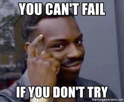

Finnish Learning Advice
Speaking another language is a skill and, just like other skills, learning a language requires hard work and practice. However, without a teacher to help guides your practice you could find that some of your hard work goes to waste. In this article I will share some of my tips, as both a language teacher and learner, on how to direct your efforts efficiently and get the most out of the hard work you put into learning Finnish. My approach is practically oriented and aims to get you communicating and understanding as quickly and easily as possible.
1. Don't try to be perfect!
There are actually plenty of studies that show that personality types affect the success of langauge learners and, perhaps surprisingly for some, perfectionists appear to take longer to pick up languages. One of the main thoughts is that perfectionists are so worried about getting every sentence exactly right that they never even try to speak or write for fear of not being correct! I know that I fall into this trap often myself. Learners who are ok with making mistakes learn faster because they are constantly "testing" out their language skills. If they get it wrong and someone corrects them, "no worries!", because they can learn from the mistake.

Finns aren't going to judge you for getting their language wrong. They will just be impressed that you are even trying to speak their weird as language (yes, most Finns are highly aware of how difficult and strange their own language can be). So, leave your ego at the door, and come to terms with the fact that while learning a language you might sometimes have to feel like a bit of a fool. Be reassured though, by the fact that you will be learning faster and that other people don't think you are as silly as you might feel.
2. Learn things in the smartest order.
You want to learn in an order that is easy, but also in an order that is useful and allows you to actually communicate with your new skills. That's why you learn a language after all, to communicate. If you are just starting out I've made a whole page outlining the order that I would suggest.
3. Focus on kirjakieli first.
As you have probably heard, spoken Finnish (puhekieli) is different to written Finnish (kirjakieli). People will make a big deal out of this and rant and rave about how different they are but for the most part I think it's a bit over-hyped. The difference is not so different to other languages, where spoken forms are a lot more casual using abbreviations and different vocabulary in different dialects. To get an idea of the difference, it's not so dissimilar to how people from some parts of Ireland might speak English with their "yee", "amn't" and "tat tar". It's different for sure, but not (entirely) incomprehensible if you know English.
You will definitely hear puhekieli everywhere but if you already understand kirjakieli you will still be able to understand with just a bit of effort. Words are generally just abbreviated and in a few cases different grammar structures are used (but they are mostly structures that appear in kirjakieli anyway). If you speak kirjakieli everyone will still understand you and over time as you get more confident you can start shifting your spoken language into puhekieli to sound more "native". I think this is better than learning puhekieli from the start because it won't help you to read (which as a beginner is the easiest comprehension learning you can do) and whatsmore puhekieli changes around the country.
4. Train all 4 language skills.

It's common sense that language can be divided up into 4 skills, two productive skills of speaking andwriting, and two comprehensive skills of reading and listening.While reading and listening are the easiest to practice on your own it is also really important to your language development that you find ways to practice speaking and writing. Of course don't forget you can always speak and write to yourself, but if you feel too crazy doing that then take a look at my recommendations on how to practice each skill, at a variety of ability levels, which can be found here.
5. Speak to other learners.
We just talked about how speaking practice can be hard to find, well guess what, other Finnish learners feel the same way, so why not solve each other's problems? Many Finnish learners, even living in Finland find it hard to get speaking practice either because they don't know many native Finns or because when they attempt to speak to Finns the conversation quickly switches to English either because the Finns like to practice their English or are trying to be polite. When you are starting out, speaking to other learners is a great way to practice because it makes you feel much less intimidated than speaking to a native speaker. They speak slower, they use simpler language, and they make mistakes just like you so you won't feel so self conscious. Whatsmore, you can analyse any mistakes they make (in your own head, it's no fun to be corrected the whole time) and learn from them even more. Of course once you progress it is vital that you speak with more native speakers to improve your skills more and more.Bonus points for speaking to other language learners who don't speak the same native language as you!
6. Find ways to fit Finnish into your day.
We are all busy and it can be hard to fit language learning into your day. Many language learning companies build their entire businesses around this fact trying to offer "miracle solutions" to help you learn language fast. While I don't believe that these solutions will ever get you fluent they certainly can help to get you introduced to a language and start learning the basics. There are many resources out there which will help you fit Finnish learning in around your busy schedule during:
- Podcasts are a great way to learn when driving, riding your bike, working out, cleaning, cooking or doing anything else that doesn't require too much thinking but is keeping your hands and eyes busy.
- Flash cards or language training apps can be great when you are waiting for a friend, an appointment or for a bus.
- Videos and readings can be a great way to pass a few minutes if you travel by public transport.
For even more ideas on learning resources be sure to check out my resource recommendations here.
7. Use authentic resources wherever you can.
Textbooks and dedicated Finnish learning resources have their place, but you cannot rely on them alone to be your sole source of Finnish learning. Textbooks can often oversimplify language alot, and while this might be useful when you are just starting out, or for helping you to understand the construction of new grammar points, it's not always the most helpful for allowing you to progress your understanding of real Finnish. Much research recommends that language learners use authentic resources whenever possible, i.e. resources that were not made specifically for english speakers with over simplified Finnish language.
Textbook Finnish, using only words and grammar structures you already know, will help to boost your confidence (which is important too) but it will not prepare you for actually using your language in real life. So as well as using your textbooks also start trying to use real books, real videos, and speaking and writing to real people as soon as you can. Don't worry about understanding everything in every sentence. It's easy to get paralysed by looking up every single word you aren't 100% sure of in the dictionary. Just getting the "jist" of the sentence is usually enough to give you good practice.
8. Spend time in Finland.

The best way to find authentic Finnish resources is to actually be in Finland! Of course we aren't all lucky enough to have the opportunity to spend lots of time in Finland but there is no debate that the most effective way to learn a language is to spend time in the country where it is spoken by the locals. Living in Finland you will get the opportunity to see and hear Finnish everywhere. Even a trip to the supermarket becomes an educational experience if you let it. When it comes to "fitting finnish learning into your day" there is nothing better than reading finnish signs and information, listening to conversations around you, and communicating with shopkeepers to help your language slowly improve.
However, although it should go without saying, some people also forget that just living in a country is not enough to learn the language. You actually need to actively engage with the language too. If you always speak english when you're out and about, constantly read everything with google translate, and zone out when Finns are speaking to each other you are missing valuable learning opportunities. As much as you tell yourself it will, language is not just going to seep into your brain when you are surrounded by it unless you actually use it too. I am certainly guilty of missing these opportunities myself sometimes too, and of course you need to give yourself a break sometimes too, but the more your engage the more you will learn.
As well as being surrounded by Finnish, spending time in Finland obviously also allows you to meet more Finns to speak to and practice your Finnish as well as learn more about the unique and fascinating culture. Culture and language are very closely related (there are bucketloads of research to support this) and an appreciation and understanding of one will most certainly enhance your understanding of the other.